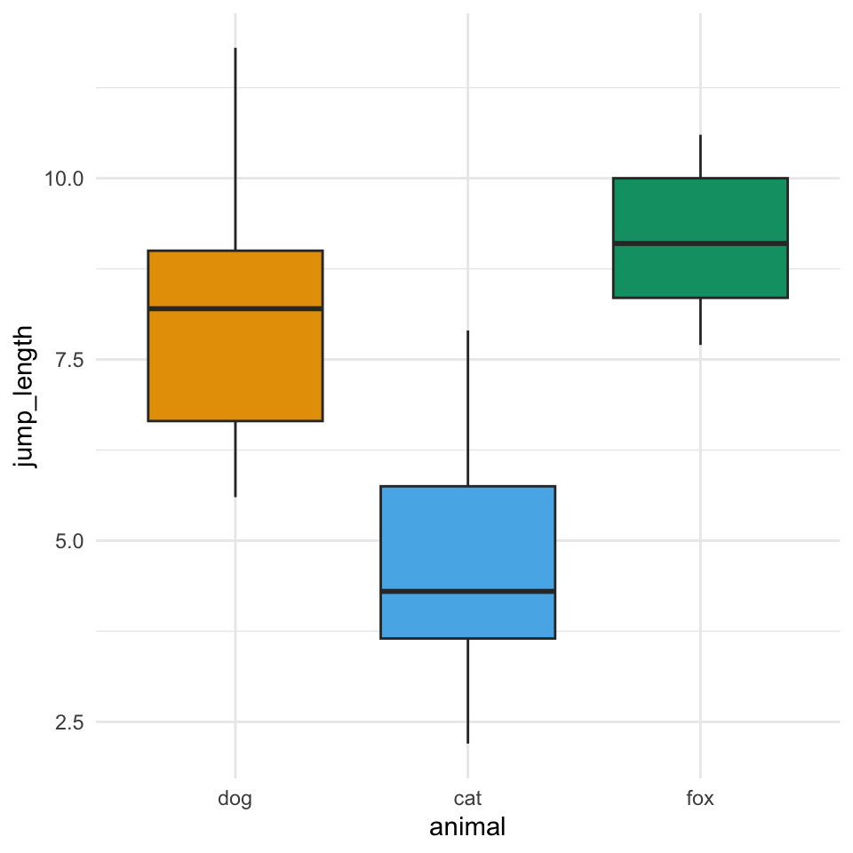

48 Fallzahlplanung
Version vom November 16, 2022 um 13:13:01
Der folgende Text ist ein Lehrtext für Studierende. Es handelt sich keinesfalls um eine textliche Beratung für Ethikanträge oder Tierversuchsanträge. Alle Beispiel sind im Zweifel an den Haaren herbeigezgen und dienen nur der Veranschaulichung möglicher Sachverhalte.
Antragsteller:innen ist die statistische Beratung von einer entsprechenden Institution dringlichst angeraten.
Es gibt DIE Übersicht für die Fallzahlberechnung in R von Dr. Mark Williamson in seinem Tutorial Sample Size Calculation with R.
In diesem Kapitel wollen wir uns mit der Fallzahlplanung beschäftigen. Eigentlich stimmt das Wort Planung überhaupt nicht. Wir machen hier eine Fallzahlabschätzung. Es geht hier darum, anhand von Werten aus der Literatur für dein eigenen Experiment die nötige Anzahl an Beobachtungen abzuschätzen. Nun ist es so, dass die Berechnung der benötigten Fallzahl in klinischen Studien oder aber Tierversuchsvorhaben vor dem Beginn des Versuchs durchgeführt werden muss. Es gibt in diesem Zusammenhang das Tierversuchsvorhaben im Falle von Tieren und den Ethikantrag im einer klinischen Studie. Beide Anträge werden faktisch bei einer Behörde gestellt und haben einen regulativen Charakter. Wir machen hier aber kein Jura. Deshalb hat dieses Kapitel auch keinen beratenden Charakter.
Wenn du an einer Institution arbeitest oder forscht, die einen Ethikantrag stellen oder einen Tierversuchsantrag einreichen will, wende dich an deine Vertrauensperson. Es muss jemanden bei dir geben, der für solche Anträge zuständig ist. Dieses Kapitel und ich sind es ausdrücklich nicht.
Eine weitere Besonderheit ist noch eine Studie, die Übrprüfen soll, ob der versuch übrhaupt machbar ist. Der versuch soll die Machbarkeit (eng. feasibility) testen. In diesem Fall brauchen wir keine Fallzahlberechnung. Wir testen ja eine sehr kleine Fallzahl, weil es uns um die technische Umsetzbarkeit des Versuches geht. Erst wenn wir wissen, dass wir den Versuch auch technisch durchführen können, machen wir dann eine statistsiche Fallzahlplanung.
48.1 Theoretischer Hintergrund
Manchmal hat man das Gefühl, dass Fallzahlplanung nur ein wildes Gerate ist. Das ist aus der Perspektive eines biologischen Fachlaien auch der Fall. Ich kenne mich sehr wenig in der vielen biologischen Feldern aus. Daher weiß ich wenig darüber was ein großer Effekt ist oder welchen Effekt du überhaupt in deinem Kartoffelexperiment erwarten kannst. Auch ist mir unklar was typische Mittelwertsunterschiede bei Wasserlinsen sind. Du musst sowas aber wissen, es ist ja schließlich dein Experiment. Wenn du also eine Fallzahlplanung durchführen willst, dann heißt es zuerst einmal Literatur wälzen oder mit den Fachkollegen sprechen.
Wir kennen ja schon die Formel für den t-Test. Der t-Test vergleicht die Mittelwerte von zwei normalverteilten Outcomes und gewichtet diesen Mittelwertsunterschied bei der Standardabweichung. Da wir in der Formel des t-Tests auch die Fallzahl inkludiert haben, können wir die Formel nach der Fallzahl umstellen.
\[ T = \cfrac{\Delta}{s_p \cdot \sqrt{\cfrac{2}{n_g}}} \]
Dabei nutzen wir die Teststatistik etwas anders. Wir zerlegen die Teststatistik \(T\) für in den Wert für den \(\alpha\)-Fehler und den \(\beta\)-Fehler. Damit können wir auch die Power \(1-\beta\) mit in unserer Formel berücksichtigen.
\[ n_g = \cfrac{2\cdot(T_{\alpha = 5\%} + T_{\beta = 20\%})^2}{\left(\cfrac{\Delta}{s_p}\right)^2} \]
Dabei nutzen wir für \(T_{\alpha = 5\%} = 1.96\) und \(T_{\beta = 20\%} = 0.84\) und vereinfachen damit die Formel ziemlich. Eigentlich nutzen wir diese Formel dann in der der Klausur oder aber um wirklich mal eben schnell zu schauen, was wir für eine Fallzahl erwarten.
Jetzt könntest du meinen, dass wir jetzt mit verschiedenen Powerleveln spielen könnten. Aber das ist leider nicht der Fall. Wir sind eigentlich zimelich auf 80% festgelegt. Da gibt es im Rahmen eines Antrags keinen Spielraum. Wir nehmen immer eine Power von 80% an.
In den allgemeinen Methoden des IQWiG, einer Regulierungsbehörde für klinische Studien, wird grundsätzlich das zweiseitige Testen empfohlen. Wenn einseitig getestet werden sollte, so soll das \(\alpha\)-Niveau halbiert werden. Was wiederum das gleiche wäre wie zweiseitiges Testen - nur mit mehr Arbeit.
Zur besseren Vergleichbarkeit mit 2-seitigen statistischen Verfahren wird in einigen Guidelines für klinische Studien eine Halbierung des üblichen Signifikanzniveaus von 5 % auf 2,5 % gefordert. – Allgemeine Methoden Version 6.1 vom 24.01.2022, p. 180
Fazit des Dokumentes ist dann aber, dass wir immmer zu einem Signifikanzniveau \(\alpha\) von 5% und einer Power von 80% testen.
48.2 Tierversuchsantrag
Wenn du einen Tierversuch durchführen willst, dann bist du natürlich hier falsch. Ich kann dir bei dem Ausfüllen von Dokumenten nicht helfen. Was ich aber kann, ist dir einen Überblick über die Inhalte zu geben, so dass du dann nochmal informiert an anderer Stelle Fragen stellen kanst. Schaue gerne einmal mein Video auf YouTube mit dem Kontext zum Tierversuchsvorhaben. Eine wunderbare Übersicht über den Tierversuchsantrag liefert auch Piper u. a. (2022).
Du findest auf YouTube Kontext zu Tierversuchsvorhaben als Video Reihe. Es handelt sich hierbei um ein reines Lehrvideo mit keinem beratenden Anspruch.
In dem Video habe ich dann alles anhand des Tierversuchsvorhaben am LaGeSo in Berlin besprochen. Das hatte den Grund, dass ich zur Zeit des Videos an der Charité beschäftigt war. Da bei einem Tierversuchsantrag jeweils die Bundesländer zuständig sind, musst du bei deiner jeweiligen Ladesbehörde einmal schauen. In Niedersachsen musst du dir die Wenseite zu Tierversuche vom Laves anschauen. Hier findest du dann andere Dokumente und Ausfüllhilfen. Wenn man als Wissenschaftler viel wechselt, wird man leicht wirr.
48.3 Ethikantrag
Eben hatten wir uns kurz den Antrag für ein Tierversuchsvorhaben angeschaut. Richtig kompliziert wird es, wenn wir nicht mit Tieren arebiten sondern Versuche am Menschen durchführen. Ein versuch am Menschen beinhaltet schon das Ausfüllen eines Fragebogens! Daher kanns du auch schnell in die Situtaton kommen, dass es eventuell eine ethische Komplikation gibt. Ich habe die Inhalte im Kontext einer klinischen Studie einmal in einem YouTube Video dargestellt und allgemein eingeordnet.
Du findest auf YouTube Kontext zum Ethikantrag als Video Reihe. Es handelt sich hierbei um ein reines Lehrvideo mit keinem beratenden Anspruch.
Da ich in meiner Lehre die klinischen Studie nur am Horizont sehe, gibt es hir auch keine weiteren Links zu dem Thema. In dem Video siehst du noch ein paar öffentliche Quellen. Da es sich aber bei einem Ethikantrag meist um einen internen Prozess einer Universitätsklinik handelt, sind die (aktuellen) Dokumente meist nicht öffentlich zugänglich. Im Zweifel bitte an die zuständigen Gremien an deiner Institution wenden.
48.4 Genutzte R Pakete für das Kapitel
Wir wollen folgende R Pakete in diesem Kapitel nutzen.
pacman::p_load(tidyverse, magrittr, pwr, readxl, see,
effectsize, conflicted)
conflict_prefer("select", "dplyr")
conflict_prefer("filter", "dplyr")
conflict_prefer("mutate", "dplyr")
conflict_prefer("extract", "magrittr")Am Ende des Kapitels findest du nochmal den gesamten R Code in einem Rutsch zum selber durchführen oder aber kopieren.
48.5 Mittelwertsvergleich für zwei Gruppen in R
Da wir ja nur die Formel des t-Tests für die Fallzahlberechnung haben, können wir auch immer nur die Fallzahl für den Vergleich zwischen zwei Gruppen rechnen. Das ist immer erstmal wieder ungewohnt. Aber wir machen das jetzt erstmal nur für zwei Gruppen. Später schauen wir uns an, ws passiert, wenn wir mehr Gruppen miteinander vergleichen wollen. Prinzipiell ist der Kern aber immer ein Zweigruppenvergleich, den wir dann etwas anders Aufbauen.
Für die Berechnung der Fallzahl wollen wir das R paket pwr nutzen. Wir brauchen in diesem Kapitel nur drei Funktion aus dem Paket, aber es gibt auch weit aus mehr. Im Zweifel einfach einmal die Hilfeseite aufrufen und schauen was es dort noch so gibt.
Wir können mit der Funktion pwr.t.test() die Fallzahl für die Effektstärke nach Cohen’s \(d\) berechnen. Mehr über Cohen’s \(d\) kannst du im Kapitel 21 erfahren. Wir nutzen hier eine relativ harte Abschätzung. Aber hier wird sowieso alles abgeschätzt, da kommt es jetzt auf künstliche Genauigkeit nicht mehr an. Wir berechnen also Cohen’s \(d\) vereinfacht für die Fallzahlberechnung wie folgt.
\[ d = \cfrac{\Delta}{s_{\Delta}} \]
mit
- \(\Delta\) als den zu erwartenden Mittelwertsunterschied zwischen den beiden Gruppen. Wir haben den Wert aus der Literatur entnommen.
- \(s_{\Delta}\) als der Standardabweichung des Mittelwertsunterschieds. Wir können hier als Vereinfachung mit der Spannweite der Daten mit \(\frac{range}{4}\) als Schätzer für die Standardabweichung rechnen. Ebenfalls haben wir die Werte aus einer Literaturquelle.
Es gäbe auch die Möglichkeit über die Funktion cohen.ES() die Effekte für verschiedene statistische Tests sich wiedergeben zu lassen, wenn wir definieren, wie stark der Effekt zwischen den Gruppen sein soll. Es steht zur Auswahl small, medium und large. Wir erkennen, dass ist nicht gerade viel Abstufung.
cohen.ES(test = "t", size="medium") %>%
pluck("effect.size")[1] 0.5Die Fallzahlberechnung geht recht einfach. Wir setzen die Option n = auf NULL, so dass uns die Funktion diese Option berechnet. Wir kriegen also die Fallzahl gegeben von dem Signifikanzniveau, der Power und der Effektstärke wieder. Dann geben wir noch an, dass wir zweiseitig testen. Also eigentlich alles fix, da können wir selber zwar was ändern, aber am Ende wird meist nur die Standardwerte von Dritten akzeptiert.
res_ttest <- pwr.t.test(n = NULL,
sig.level = 0.05,
type = "two.sample",
alternative = "two.sided",
power = 0.80,
d = 0.8)
res_ttest
Two-sample t test power calculation
n = 25.52458
d = 0.8
sig.level = 0.05
power = 0.8
alternative = two.sided
NOTE: n is number in *each* groupBitte immer Aufrunden. Wir brauchen also \(n_1 = n_2 = 26\) Beobachtungen je Gruppe, so dass wir für \(32\) beobachtungen unseren Versuch planen können. In Abbildung 48.1 sehen die Power abhängig von der verwendeten Fallzahl. Wir sehen, dass wir mit mehr Fallzahl eine höhere Power erhalten würden, aber wir schon sehr nah an der Sättigung sind.
plot(res_ttest) +
theme_minimal(base_size = 14) +
labs(title = 'Optimierte Fallzahl für den Zweistichproben t-Test.'))
48.6 Anteilsvergleich für zwei Gruppen in R
Wann benötigen wir Anteile? Häufig nutzen wir Anteile, wenn wir zum Beispiel infizierte Ferkel untr zwei Behandlungen untersuchen wollen. Wie viel Prozent der Ferkel in der einen Gruppe werden infiziert sein und wieviel Ferkel in der anderen Gruppe. Daher haben wir ein Medikament und wollen schauen, ob sich die Anzahl an infizierten Ferkeln reduziert. Wir nehmen aber nicht die Anzahl als Wert sondern die relative Angabe. Im folgenden Beispiel haben wir \(95\%\) infizierte Ferkel in der einen Gruppe und \(80\%\) infizierte Ferkel in der anderen Gruppe. Wie viel Fallzahl brauchen wir nun, um diesen Untrschied nachzuweisen. Achtung, wir rechnen hier wirklich mit den relativen Zahlen und nicht mit der Differenz. Ist leider so.
Wir können die Funktion ES.h() benutzen um den Effekt zwischen zwei Wahrscheinlichkeiten zu berechnen. Wir geben einfach die beiden Wahrscheinlichkeiten für die zu erwartende Häufigkeit an infizierten Ferkeln ein. Dann berechnen wir den Effekt \(h\) und nutzen diesen Wert dann für die Fallzahlberechnung.
ES.h(p1 = 0.95, p2 = 0.80) %>%
round(2)[1] 0.48Hier kommt es dann auch nicht wieder auf die letzte Prozentzahl an. Wir immer kann man hhier spielen. Aber du hast ja deine Zahlen aus der Literatur und passt diese Zahlen dann deinem Setting und anhand deinem biolologischen Wissen an. Es ist immer eine Gradwanderung, wie genau die Zahlen nun seien sollen. Insbesondere, wenn es dann doch nicht so viel Literatur gibt. Wir setzen die Option n = auf NULL, so dass uns die Funktion diese Option berechnet. Wir kriegen also die Fallzahl gegeben von dem Signifikanzniveau, der Power und der Effektstärke wieder. Dann geben wir noch an, dass wir zweiseitig testen.
res_prop <- pwr.p.test(h = 0.48,
n = NULL,
sig.level = 0.05,
power = 0.80,
alternative = "two.sided")
res_prop
proportion power calculation for binomial distribution (arcsine transformation)
h = 0.48
n = 34.06623
sig.level = 0.05
power = 0.8
alternative = two.sidedAm Ende erhalten wir eine Fallzahl von \(n_1 = n_2 = 35\) Beobachtungen aus der Fallzahlberechnung. Wir wissen also, wie viele Ferkel wir untersuchen müssten um einen Unterschied von \(95\%\) zu \(80\%\) signifikant nachweisen zu können. In Abbildung 48.2 sehen wir nochml die Sättigungskurve für die Power für verschiedene Fallzahlen. Mit unserer berechneten Fallzahl von \(n=35\) pro Gruppe sind wir schon recht nah an der Sättigung der Funktion. Wir können damit die Fallzahl beibehalten und uns übrlegen, ob wir überhaupt das Geld und die Ressourcen haben um den Versuch mit dieser Anzahl an Ferkeln durchzuführen.
plot(res_prop) +
theme_minimal(base_size = 14) +
labs(title = 'Optimierte Fallzahl für zwei Anteile.'))
48.7 Anteil der erklärten Varianz in R
Nun können wir die Fallzahlplanung auch für eine einfaktorielle ANOVA durchführen. Das ist unsere Basis. Wir würden dann überlegen, wie sich dann die Fallzahl mit weiteren Faktoren ändern würde. Auch hier ein Wort der Warnung. Es gibt häufig so starke Randbedingungen, wie Kosten oder Fläche, dass die Berechnung der Fallzahl absolet wird. Wenn du drei Blöcke hat, dann hast du drei Blöcke. nutze die Blöcke dann auch. Wenn du freeie Wahl hättest und viel, viel Geld, dan kann man sicherlich besser die Fallzahl abschätzen und nutzen. Fallzahlberechnung nur so zum Spaß hat dann ja auch wenig Sinn. Also hier nochmal unser Modell was wir uns mit einer einfaktoriellen ANOVA anschauen.
\[ y \sim f_1 \]
Wir immer brauchen wir auch einen Effekt. In dem Fall der ANOVA ist der Effekt Cohen’s \(f\). Wir berechnen Cohen’s \(f\) wie folgt aus dem \(\eta^2\). Wir können an dieser Stelle schon die Werte für \(\eta^2\) einsetzen und \(f\) berechnen.
\[ f = \sqrt{\cfrac{\eta^2}{1- \eta^2}} \]
Du erinnerst dich aus der ANOVA, das \(\eta^2\) beschreibt den Anteil an erklärter Varianz durch den Faktor in der ANOVA. Damit ist \(\eta^2\) wie folgt definiert.
\[ \eta^2 = \cfrac{SS_{treat}}{SS_{total}} \]
Das hilft uns nur so begrenzt weiter. Am besten überlegst du dir, wieviel Varianz wohl die Behandlung erklären kann. Damit hast du dann dein \(\eta^2\). Wenn deine Behandlung vermutlich ca. 70% der Varianz in deinen Daten erklären und somit im Ourtcome erklären kann, dann setzt du \(\eta^2 = 0.7\). Dann berechnest du dein \(f = \sqrt{\tfrac{0.7}{0.3}} = 1.53\) und hast damit einen sehr großen Effekt. Was dir auch die Funktion interpret_eta_squared() aus dem R Paket effectsize mitteilt.
interpret_eta_squared(1.53)[1] "large"
(Rules: field2013)Wir können dann Cohen’s \(f\) in die Funktion pwr.anova.test() stecken und die Fallzahl pro Gruppe ausrechnen. Wir haben jetzt mal einen Faktor mit drei Behandlunsgleveln angenommen, deshalb ist auch \(k = 3\) in der Funktion.
res_anova <- pwr.anova.test(k = 3,
f = 1.5,
n = NULL,
sig.level = 0.05,
power = 0.80)
res_anova
Balanced one-way analysis of variance power calculation
k = 3
n = 2.713068
f = 1.5
sig.level = 0.05
power = 0.8
NOTE: n is number in each groupTja, mit so einem großen Effekt brauchen wir wirklich wenig Wiederholungen um mindestens einen Unterschied nachzuweisen. Stimmt, wir haben natürlich auch nur global über alle Gruppen geschaut. Ich finde die Fallzahlplanung für eine ANOVA relativ eingeschränkt, aber so ist das eben auch bei der Fallzahlplanung. Meistens ist das was möglich ist sehr eingeschränkt.
48.8 Mehr als zwei Gruppen
Was passiert, wenn wir mehr als zwei Gruppen vorliegen haben? Was eigentlich immer der Fall ist. Also wir haben nicht nur zwei Düngestufen oder zwei Sorten Blumenkohl, die wir miteinander vergleichen wollen, sondern wir haben zehn oer mehr. Wir bauen jetzt nicht so ein großes Beispiel sondern nehmen einmal die Sprungweiten von den Hunde-, Katzen- und Fuchsflöhen.
fleas_tbl <- read_excel("data/flea_dog_cat_fox.xlsx") %>%
mutate(animal = as_factor(animal))In Abbildung 48.3 sehen wir nochmal die Verteilung der Sprungweiten für die drei Tierarten als Boxplots dargestellt.
ggplot(fleas_tbl, aes(animal, jump_length, fill = animal)) +
theme_bw() +
geom_boxplot() +
theme(legend.position = "none") +
scale_fill_okabeito()
Wenn wir jetzt für ein neues Experiment die Fallzahl planen wollen würden, dann brauchen wir die Mittelwerte und die Stanardabweichung der Sprungweiten. Wir haben ja hier unser Pilotexperiment vorliegen, also können wir auch hier die Mittelwerte und die Standardabweichung getrennt für die Tierarten berechnen.
fleas_tbl %>%
group_by(animal) %>%
summarise(mean = mean(jump_length),
sd = sd(jump_length)) %>%
mutate(across(where(is.numeric), round, 2))# A tibble: 3 x 3
animal mean sd
<fct> <dbl> <dbl>
1 dog 8.13 2.14
2 cat 4.74 1.9
3 fox 9.16 1.1 Natürlich sind wir nicht an den Mittelwerten sondern an den Unterschieden interessiert. Daher rechnen wir nochmal in Tabelle 48.1 alle Mittelwertsdifferenzen aus.
| cat | fox | |
| dog | \(8.13 - 4.74 = 3.39\) | \(8.13 - 9.16 = -1.03\) |
| cat | \(4.74 - 9.16 = -4.42\) |
Wenn wir die kleinste Differenz in den Mittelwerten mit einer Power von 80% nachweisen können, dann können wir auch alle anderen größeren Mittelwertsdifferenzen mit einer Power größer als 80% nachweisen. Daher brauchen wir die Fallzahlplanung nur für den kleinsten Mittelwertsunterschied durchführen. Wir berechnen noch Cohen’s d mit \(d = \tfrac{1.03}{(2.14 + 1.1)/2} \approx 0.16\). Ganz schön kleiner Wert, wie uns die Funktion interpret_cohens_d() aus dem R Paket effectsize mitteilt.
interpret_cohens_d(0.15)[1] "very small"
(Rules: cohen1988)Weil wir es können berechnen wir auch die Fallzahl und kriegen einen kleinen Schreck. Denn mit einem so kleinen Effekt brauchen wir wirklich viele Flöhe.
res_flea <- pwr.t.test(n = NULL,
sig.level = 0.05,
type = "two.sample",
alternative = "two.sided",
power = 0.80,
d = 0.16)
res_flea
Two-sample t test power calculation
n = 614.1541
d = 0.16
sig.level = 0.05
power = 0.8
alternative = two.sided
NOTE: n is number in *each* groupMit am Ende über \(2 \cdot 615 = 1230\) Flöhen für den Vergleich von Hunde- und Fuchsflöhen sind wir wirklich weit, weit oben was die Fallzahl angeht. Da hilft es dann auch nicht viel, dass wir mit zusätzlich \(615\) Katzenflöhen dann auch die anderen paaweisen Vergleichw als signifikant finden würden. Denn Cohen’s d für den Vergleich von den Hunde- und Katrzenflöhen wäre \(d = \tfrac{3.39}{(2.14 + 1.9)/2} \approx 0.42\). Damit würden wir dann eine Power von \(0.99999997\) erhalten. Wir können die Power berechnen indem wir das Feld Power mit NULL belegen und die Fallzahl von \(n = 615\) eintragen.
res_flea <- pwr.t.test(n = 615,
sig.level = 0.05,
type = "two.sample",
alternative = "two.sided",
power = NULL,
d = 0.42)
res_flea
Two-sample t test power calculation
n = 615
d = 0.42
sig.level = 0.05
power = 1
alternative = two.sided
NOTE: n is number in *each* group48.9 G*Power als Alternative
Du findest auf YouTube G*Power als Alternative als Video Reihe. Ich werde zwar alles nochmal hier als Text aufschreiben, aber manchmal ist das Sehen und Hören dann einfacher.
Als Alternative zu R wollen wir uns noch das Standalone Programmm G*Power | Statistical Power Analyses von der Heinrich-Heine-Universität Düsseldorf anschauen. Die Software ist nicht mehr die neuste, wird aber immer noch gewartet und an die aktuellen Versionen von Mac und Windows angepasst. Manchmal ist dann Point und Klick dann doch eine Alternative, wenn man sich ausprobieren will.
Ich werde also im Folgenden ein paar Screenshots zeigen, wie du mi G*Power dir auch die Fallzahl für Mittelwertsunterschiede und Anteilesunterschiede berechnen kannst. Allgemein ist es so das G*Power immer einseitig (eng. Tail(s) one) und zu einer Power von 95% testet. Daher müssen wir immr schauen, dass diese Werte stimmen. Insbeosndere, wenn du viel rumprobierst können auch die Werte mal wieder zurückspringen. Also bitte darauf achten.
In Abbildung 48.4 sehen wir die Berechnung der Fallzahl für den t-Test für einen Vergleich zweier Gruppen. Wir müssen darauf achten, dass wir die Testfamilie richtig wählen und dann den korrekten Test auswählen. Du siehst bei der eigenen Verwendung dann, dass es hier eine große Auswahl gibt. Wir nehmen aber den Standard von zwei unabhängigen Gruppen. Wir erhalten dann eine Fallzahl von \(n = 54\) für unseren Versuch. Das schöne an G*Power ist, dass du relativ einfach und schnell mit den Zahlen spielen kannst. Das Speichern ist schwerer, so dass ich immer einen Screenshot empfehle. Man vergisst schnell, was alles in en Feldern stand.
In Abbildung 48.5 sehen wir die Berechnung der Fallzahl für zwei Anteile. Wir haben zwei Gruppen vorliegen und in der ersten Gruppe haben wir 60% infizierte Ferkel, In der anderen Gruppe erwarten wir dann 90% infiztierte Ferkel. Um den Unterschied von 30% nachzuweisen, brauchen wir mindestens 180 Ferkel. Leider ist es so, dass wir den Test für Anteile unter dem Reiter Exact finden. Das muss man eben wisen. Achte wieder auf die Power und das zu zweiseitig testen willst.